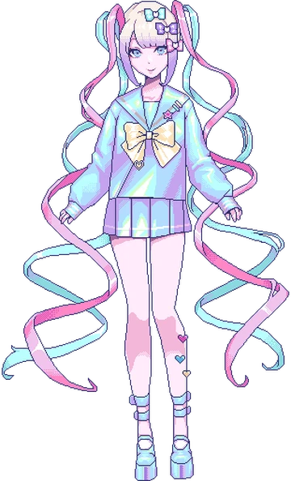

... твой стрим-интерфейс ...
... Task Manager + Chat ...

🌸 Stream Window
🧠 Task Manager
📅 Day:
1
👥 Followers:
1000
🧠 Mental Status:
On the brink
😰 Stress:
30%
💖 Affection:
Taken
P-Chan:
Привет!
KAngel:
Всем привет, стрим начался 💖
😃 Mood: 80%
👥 Subs: 1200
⚡ Energy: 60%
Start Stream
End Stream
Settings